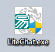
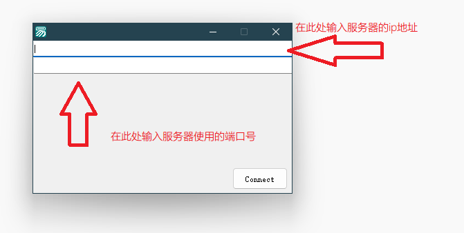
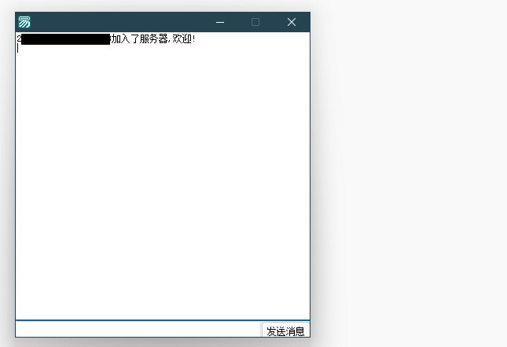
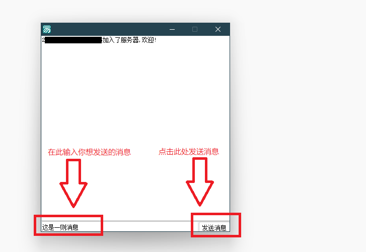
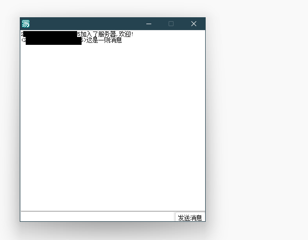

教程：如何使用 LiteChat ?
1 - 首先下载并找到 LiteChat 本体，然后打开。

( 附图： LiteChat 在桌面上的样子 )
2 - 在主界面中，请在第一个文本框填入服务器的网址。
然后在第二个文本框中填入服务器开放的端口号。

( 附图： LiteChat 主界面 )
3 - 在填写完关于服务器的信息后，点击 “Connect” 即可连接服务器。

( 附图： LiteChat 成功连接至服务器 )
4 - 在最下方的文本框中输入您想发送的信息，并点击 “发送消息” 发送。

( 附图：使用 LiteChat 进行聊天 )
5 - 在点击 “发送消息后” 您的消息就会被发送了。

( 附图：消息被发送 )
您已经了解了使用 LiteChat 所需要掌握的步骤。
该教程已结束！